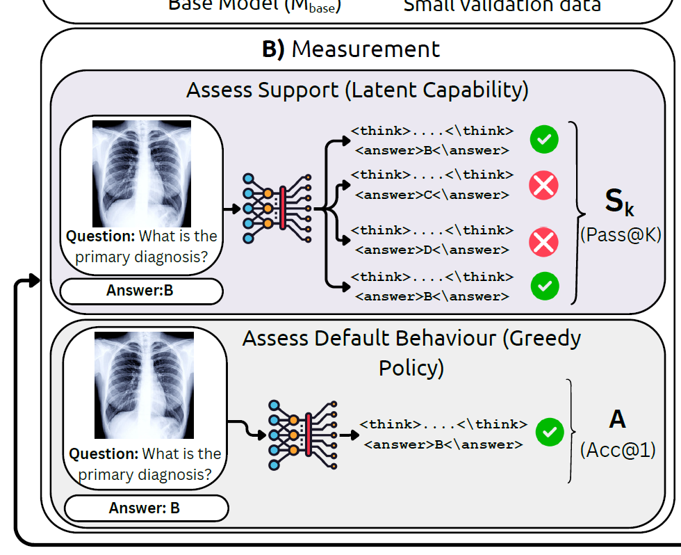
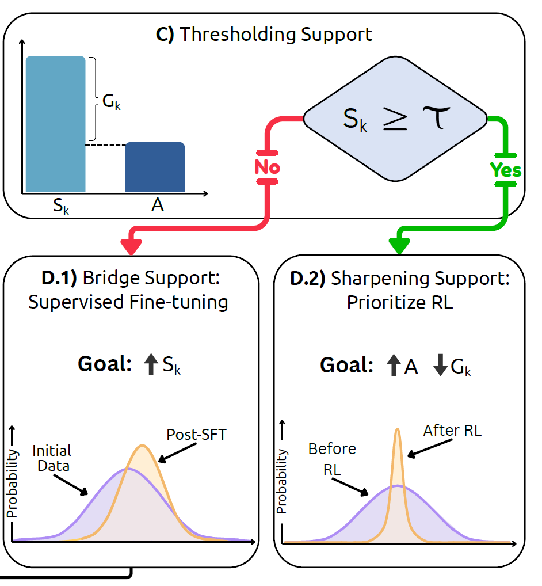

Does RL improve reasoning?
Medical RL post-training often helps on some benchmarks but can fail to transfer, or even hurt latent capability, across others.
MedBridgeRL studies when RL genuinely helps medical vision-language models: first measure support with Pass@K, then decide whether to bridge weak regimes with targeted supervised data or sharpen already-supported behavior with RL.
Framework at a glance

Use Pass@K to estimate the model's latent capability rather than judging it only by greedy decoding.
The gap between support and default behavior reveals whether the model lacks capability or just samples poorly.
When support is low, targeted medical SFT expands what the model can already reach.
When support is already present, RL improves sampling efficiency and pushes good answers toward the top.
Overview
Medical RL post-training often helps on some benchmarks but can fail to transfer, or even hurt latent capability, across others.
Greedy accuracy alone hides whether a model knows the answer somewhere in its distribution or never reaches it at all.
The paper turns this diagnosis into a simple decision rule: bridge with SFT when support is weak, prioritize RL when support is sufficient.
Reinforcement learning is increasingly used to post-train medical vision-language models, yet it is still unclear when it truly helps. A gain in greedy accuracy might reflect better reasoning, better sampling, or simply better alignment to a narrow benchmark.
MedBridgeRL separates these effects through the lens of Pass@K versus Acc@1. Support tells us whether correct answers are already present in the model's distribution, while default behavior tells us whether the model can surface them reliably.
This view leads to a boundary-aware strategy: use task- or modality-proximal supervision to expand support when it is low; once support is already non-trivial, use RL to sharpen the distribution and improve top-1 performance and sampling efficiency.
Framework
MedBridgeRL starts by asking a sharper question than “what is the greedy answer?” It samples multiple reasoning traces, measures whether the correct answer appears anywhere among them, and treats that as Pass@K support.

Boundary-aware recipe

Once support is measured, the next move becomes much clearer. If the model has weak support, targeted medical SFT can move probability mass toward useful regions. If support is already high, RL is better used to concentrate that mass and improve Acc@1.
RL alone is unlikely to rescue the model. First use supervision that is close to the task or modality to raise Pass@K.
RL becomes effective because it sharpens the distribution, improving top-1 accuracy and sampling efficiency without needing to invent new capability from scratch.
Citation
@misc{jeddi2026doesrlhelpmedical,
title={When Does RL Help Medical VLMs? Disentangling Vision, SFT, and RL Gains},
author={Ahmadreza Jeddi and Kimia Shaban and Negin Baghbanzadeh and Natasha Sharan and Abhishek Moturu and Elham Dolatabadi and Babak Taati},
year={2026},
eprint={2603.01301},
archivePrefix={arXiv},
primaryClass={cs.CV},
url={https://arxiv.org/abs/2603.01301}
}